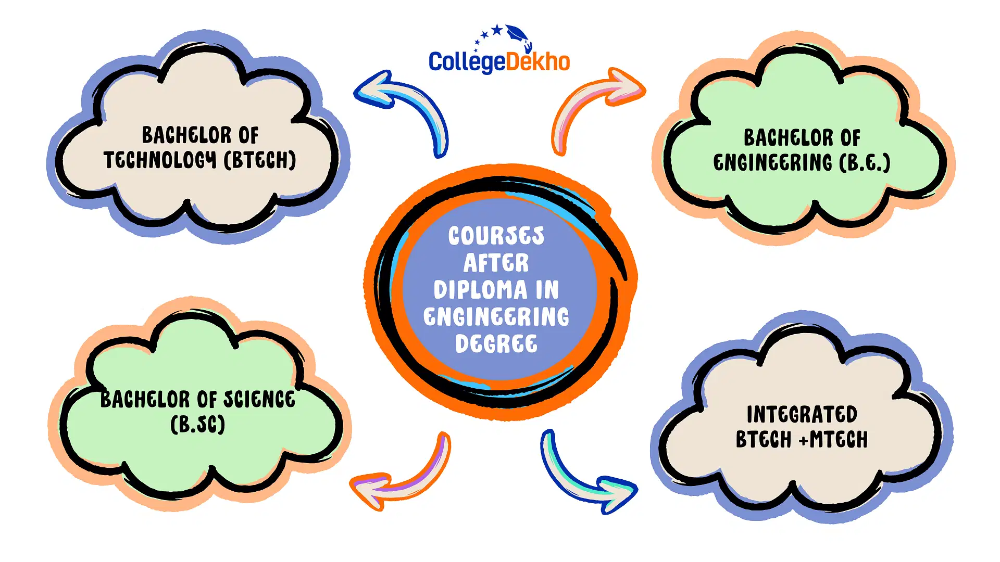

Polytechnic Courses
About Polytechnic Courses
Polytechnic courses provide diploma-level education in engineering and technical fields, focusing on practical knowledge and industry relevance.
Polytechnic Diploma
Polytechnic Diploma programs are designed for students interested in technical education and practical skills development. These programs prepare students for careers in engineering, technology, and applied sciences.
What is Polytechnic Diploma?
A Polytechnic Diploma is a 3-year program that focuses on providing students with the necessary skills and knowledge to work in technical fields such as mechanical engineering, civil engineering, electronics, and computer science. The curriculum includes both theoretical studies and practical training.
Polytechnic education is ideal for students who want to enter the workforce quickly or pursue further studies in engineering at the undergraduate level. The program prepares students for roles in industries such as construction, manufacturing, and information technology.
Students in this program gain hands-on experience through workshops, projects, and industrial visits, ensuring that they are job-ready upon graduation. Polytechnic institutes offer specialized courses in various branches of engineering and technology.
After completing the diploma, students can work as technical assistants, junior engineers, or in other specialized roles within their field. The diploma also opens up opportunities for further education, such as a degree in engineering through lateral entry into undergraduate programs.
Key Benefits of Polytechnic Diploma
One of the key benefits of pursuing a Polytechnic Diploma is the practical training students receive. Unlike traditional academic education, Polytechnic programs focus on skill development that directly translates into job opportunities.
The hands-on approach of polytechnic education ensures that students are well-prepared for real-world challenges. They acquire both theoretical knowledge and practical experience in their chosen field, making them highly employable right after graduation.
Polytechnic programs are also shorter in duration, typically taking around 3 years to complete, compared to traditional engineering degrees that take 4 years. This allows students to enter the workforce sooner and start earning earlier.
Polytechnic diplomas are widely recognized by various industries, making graduates eligible for various technical positions. Students can choose from a wide range of technical disciplines, including mechanical, civil, electrical, and computer engineering.
Additionally, students have the flexibility to continue their education by pursuing a degree in engineering through lateral entry programs at universities, giving them further career growth potential.
Popular Polytechnic Disciplines
Polytechnic programs offer a variety of specializations, each catering to different industries. Some of the popular fields of study include:
Mechanical Engineering: This discipline focuses on the design, analysis, and manufacturing of machines and mechanical systems. Students learn about thermodynamics, materials science, and machine design.
Civil Engineering: Civil engineering students are trained in the construction, maintenance, and design of infrastructure projects like roads, bridges, and buildings. The program includes courses in structural analysis, construction materials, and environmental engineering.
Electrical Engineering: This program focuses on electrical systems, electronics, and power generation. Students learn about circuits, power systems, and renewable energy technologies.
Computer Science and IT: This stream prepares students for careers in software development, networking, and IT infrastructure. Courses cover programming, data structures, computer networks, and database management.
Career Opportunities After Polytechnic Diploma
Polytechnic diploma holders have access to a wide range of career opportunities. Some of the roles available include:
Junior Engineer: Graduates can work as junior engineers in various industries such as construction, manufacturing, and electrical companies. They assist in project planning, execution, and maintenance.
Technician: Diploma holders can work as technicians in fields like automotive repair, electronics, and machinery maintenance. They are responsible for troubleshooting, repair, and servicing technical systems.
Technical Assistant: Technical assistants support engineers and other technical professionals in tasks like research, data collection, and project management. They often work in laboratories or manufacturing plants.
Maintenance Engineer: Maintenance engineers are responsible for ensuring that machinery and equipment are in working order. They perform regular checks, repairs, and preventive maintenance.
Polytechnic diploma holders can also choose to work in public sector enterprises, private companies, or start their own businesses in fields like construction or IT support services.
How to Pursue a Polytechnic Diploma
To enroll in a Polytechnic Diploma program, students must have completed their 10th grade or equivalent examination. Most polytechnic institutes require students to pass an entrance exam, which tests their knowledge in subjects like mathematics, science, and general awareness.
Once admitted, students will undergo 3 years of training, which includes both theory and practical sessions. During this period, students will also participate in workshops, industry visits, and internships to gain hands-on experience in their respective fields.
At the end of the program, students are awarded a Polytechnic Diploma, which opens up various job opportunities in technical fields. Some students may choose to continue their education by entering lateral entry programs for a bachelor's degree in engineering or related disciplines.
It's important to choose the right specialization based on interests and career goals. Polytechnic institutes usually offer counseling and guidance to help students select the best course based on their aptitude and career aspirations.
Polytechnic education is an excellent option for students who wish to pursue a technical career in a shorter time frame and gain valuable industry-relevant skills.
How to Achieve Your Goals
- Choose a specialization like Mechanical, Civil, or Electrical Engineering.
- Complete a 3-year diploma program after 10th grade.
- Pursue internships to gain industry exposure.
Future Jobs and Opportunities
- Junior Engineer, CAD Designer, Technician.
- Higher studies or lateral entry to engineering degrees.
- Entrepreneurship in technical fields.